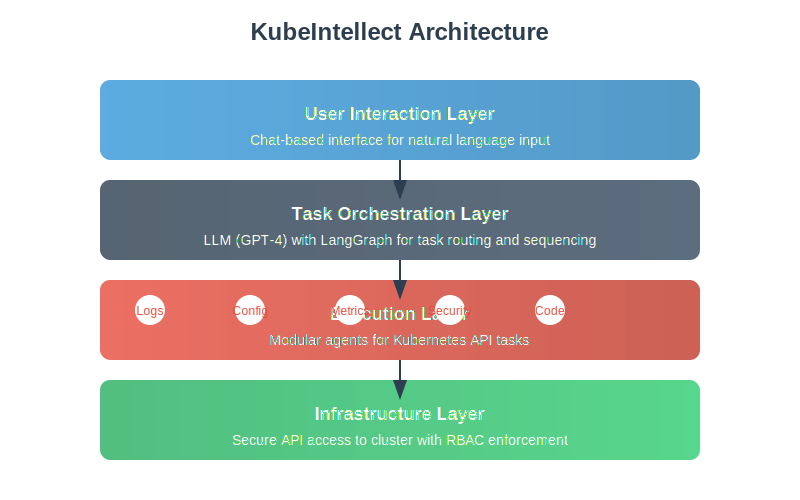

🧩 Features
Query-based Automation
Use natural language to automate complex Kubernetes tasks. Simply describe what you want to do, and KubeIntellect handles the rest.
Example:
"Show me all pods with high memory usage across all namespaces"
Agent Architecture
Specialized agents handle different aspects of your Kubernetes environment:
- Logs Agent: Retrieves and analyzes pod and container logs
- Config Agent: Manages and validates Kubernetes configurations
- Metrics Agent: Monitors resource usage and performance
- Security Agent: Performs security audits and checks
- Code Generator: Creates custom scripts for complex operations
Natural Language Control
No need to remember complex kubectl commands or YAML syntax. Just describe what you need in plain English.
🏗️ Architecture

Layered Model
| Layer | Description |
|---|---|
| User Interaction Layer | Chat-based interface that takes natural language input |
| Task Orchestration Layer | Uses an LLM (GPT-4) with LangGraph to route and sequence tasks |
| Execution Layer | Modular agents handle Kubernetes API tasks |
| Infrastructure Layer | Manages secure API access to the cluster and enforces RBAC security |
Technologies
- FastAPI – backend framework
- LangChain + LangGraph – for LLM orchestration
- OpenAI GPT-4 – the reasoning engine (can be swapped with local models)
- Kubernetes Python Client – direct access to cluster data
- Python REPL – dynamic code execution
- Poetry – environment & dependency management
- LibreChat – chat interface
📦 Installation
Prerequisites
- Python 3.9+
- Poetry
- Kubernetes cluster with API access
- OpenAI API key (or local LLM setup)
Setup Instructions
# Clone the repository
git clone https://github.com/kubeintellect/kubeintellect.git
cd kubeintellect
# Install dependencies
poetry install
# Configure environment variables
cp .env.example .env
# Edit .env with your API keys and configuration
# Start the application
poetry run python -m kubeintellect.mainLibreChat Integration
Follow these steps to connect KubeIntellect to LibreChat for a complete chat interface:
- Install LibreChat following their documentation
- Configure the API endpoint in LibreChat to point to your KubeIntellect instance
- Set up authentication if needed
🔒 Security
Important Security Considerations
KubeIntellect has powerful capabilities that require careful security planning:
REPL Caveats
The Python REPL allows dynamic code execution, which presents potential security risks. Consider:
- Running in a sandboxed environment
- Limiting permissions of the executing user
- Implementing code validation before execution
RBAC Implementation
KubeIntellect respects Kubernetes RBAC. Ensure your service account has appropriate permissions:
- Use the principle of least privilege
- Create dedicated service accounts for KubeIntellect
- Regularly audit permissions
Local vs Cloud LLM
Consider data privacy implications:
- Cloud LLMs may transmit sensitive data
- Local LLMs provide better privacy but may have reduced capabilities
- Implement data filtering to prevent sensitive information leakage